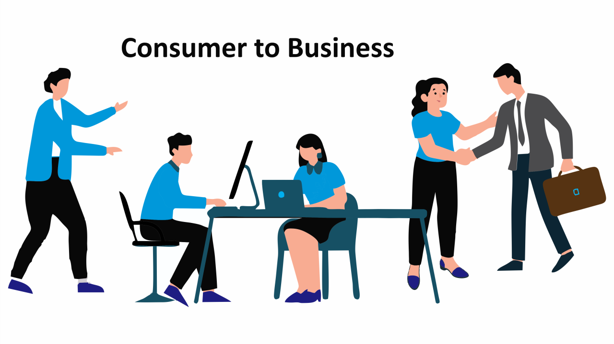

CONSUMER-TO-BUSINESS

(C2B)is a business model where individual consumers provide products, services, or value to a business. It effectively flips the traditional "Business-to-Consumer" (B2C) model on its head.
CONSUMER-TO-ADMINISTRATION

(B2A) is also known as Business-to-Government (B2G), refers to all online transactions and digital exchanges conducted between private companies and public administration or government bodies.